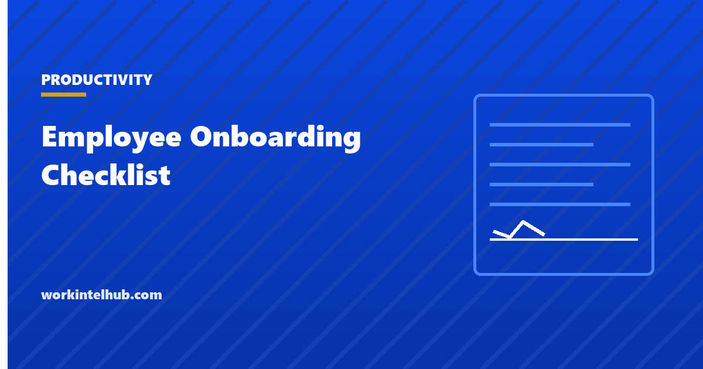

Employee Onboarding Checklist

An onboarding checklist is the list of everything that has to happen between a signed offer and a new employee being fully productive: the paperwork with legal deadlines, the access and equipment, the introductions, and the conversations at 30, 60 and 90 days that decide whether they stay.
The checklist below is interactive and remembers its ticks, so it can be kept open for the whole first month. The notes after it cover the three items with legal deadlines and the parts of onboarding that determine retention, which are not the paperwork.
The checklist
Before day one
Day one
First week
First month
Sixty and ninety days
Ticks are saved in this browser, so the page can be kept open across the first weeks. Print for the file. Items marked with deadlines are federal; add your state's.
The three items with legal deadlines
- Form I-9. Per USCIS, the employee must complete Section 1 no later than the first day of employment, and the employer must complete Section 2, having physically or remotely examined the documents, within three business days of the start date. The form is kept, not filed, and is the item most often found missing in an audit.
- New hire reporting. 42 U.S.C. 653a requires employers to report each new hire to the state directory "not later than 20 days after the date the employer hires the employee", with name, address, Social Security number, date of first work, and the employer's name, address and identifying number. Most payroll providers do this automatically; check that yours does.
- Written notices required by state law. Several states require a written pay-rate notice at hire, and four now require written notice of electronic monitoring before it begins. Our state monitoring law summary lists them, and the consent form is the document to include in the day-one pack where it applies.
The items that decide whether they stay
Paperwork does not cause early resignations. Three things do, and each has a line in the checklist.
A first week with nothing real to do. A new hire who spends five days reading documents and waiting for access concludes the company is disorganised, and is usually right. The checklist's "first real piece of work" item exists to force the manager to have one ready.
A manager who is absent. Weekly one-on-ones for the first ninety days are the single strongest predictor of a good start. The one-on-one template covers how to run them; the checklist only requires that they happen.
Expectations that were never stated. The 30-day check-in and the 60-day goal review are where the gap between what the person thought the job was and what it is gets found. Found at 30 days it is a conversation; found at a year it is an exit interview.
What the handbook and policies need to cover
The day-one acknowledgment is only worth something if the documents are worth reading. Our employee handbook guide covers what belongs in it and what backfires, and the attendance policy is the section new hires most often misunderstand, because it is the one that gets enforced first. For non-exempt staff, the timesheet or clock process needs a demonstration in week one, not a paragraph; the timesheet template page is a reasonable thing to send alongside it.
Key takeaways
- Onboarding runs from signed offer to day 90. The checklist above tracks every phase and saves its ticks.
- Form I-9: Section 1 by the first day, Section 2 by the employer within three business days. Keep the form.
- Report new hires to the state directory within 20 days. Check that payroll does it.
- State pay-rate notices and monitoring notices go in the day-one pack where they apply.
- Early resignations come from an empty first week, an absent manager and unstated expectations, not from paperwork.
- Weekly one-on-ones for 90 days, a real task in week one, and check-ins at 30, 60 and 90 days are the retention items.
Frequently asked questions
What should an employee onboarding checklist include?
Everything from offer to day 90: pre-start paperwork and equipment, day-one forms and acknowledgments, first-week compliance items and a first real task, first-month one-on-ones and a 30-day check-in, and 60- and 90-day reviews. The interactive checklist above covers all five phases with deadlines.
When must Form I-9 be completed?
The employee completes and signs Section 1 no later than their first day of employment. The employer completes Section 2, after examining the employee's documents, within three business days of the start date.
How soon must a new hire be reported?
Under federal law, within 20 days of the hire date, to the state new hire directory. Some states set a shorter deadline. Most payroll providers file the report automatically, but the employer remains responsible.
How long should onboarding last?
Ninety days is the standard planning horizon, with the intensive part in the first month. Paperwork is done in the first week; the conversations at 30, 60 and 90 days are what turn a hire into a retained employee.
What is the most commonly missed onboarding step?
Having a real piece of work ready for the first week. A new hire who spends the week waiting for access and reading policies forms a lasting view of the company. Second is the manager's weekly one-on-one, which is often dropped after week two.
Should remote employees have a different onboarding checklist?
The same items with three additions: equipment shipped and tested before day one, a buddy who checks in daily for the first week, and weekly video one-on-ones for the full 90 days, because the incidental conversations that carry information in an office do not happen remotely.